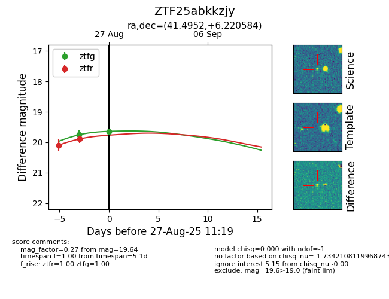

Target ZTF25abkkzjy at 2025-08-27 11:19, see:
FINK: fink-portal.org/ZTF25abkkzjy
Lasair: lasair-ztf.lsst.ac.uk/objects/ZTF25abkkzjy
ALeRCE: alerce.online/object/ZTF25abkkzjy
alt names
ZTF25abkkzjy (ztf,fink)
coordinates:
equatorial (ra, dec) = (41.4952,+6.22058)
galactic (l, b) = (166.8772,-46.64551)
photometry
last ztfg=19.64, ztfr=19.89
2 ztfg, 2 ztfr detections
